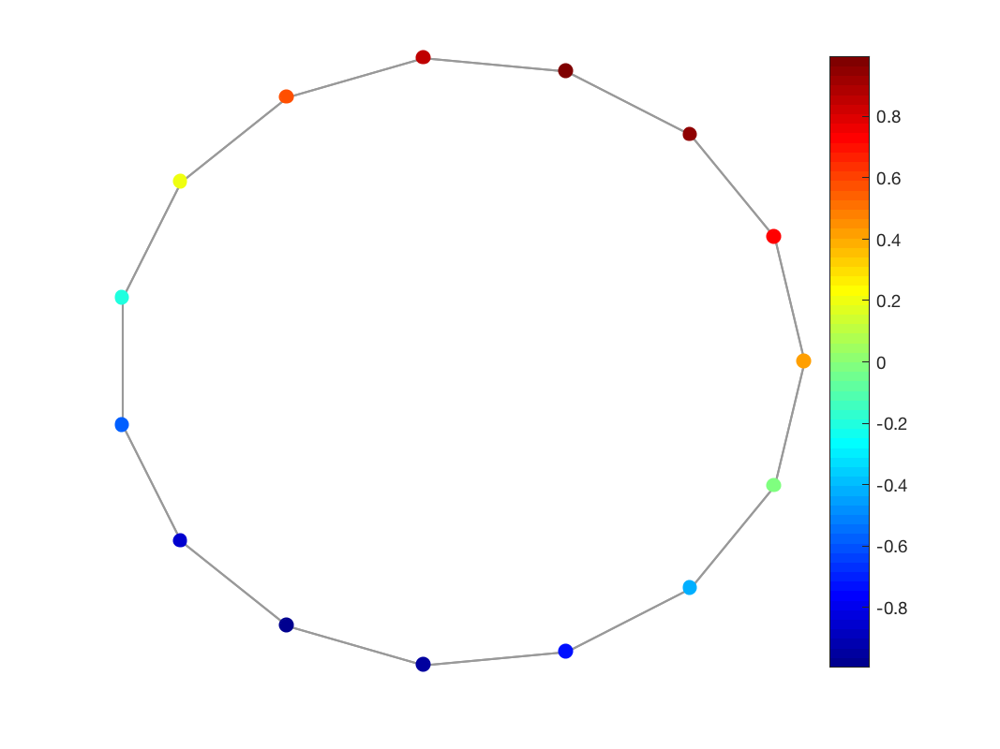

gsp_plot_signal(G,signal); gsp_plot_signal(G,signal,param);
| G | Graph structure. |
| signal | Graph signal. |
| param | Optional variable containing additional parameters. |
non none
'gsp_plot_signal(G,f)' plots a graph signal in 2D or 3D, using the adjacency matrix (G.A), the plotting coordinates (G.coords), the coordinate limits (G.plotting.limits), the edge width (G.plotting.edge_width), the edge color (G.plotting.edge_color), the edge style (G.plotting.edge_style), and the vertex size (G.vertex_size).
Example:
G = gsp_ring(15); f = sin((1:15)*2*pi/15); gsp_plot_signal(G,f)